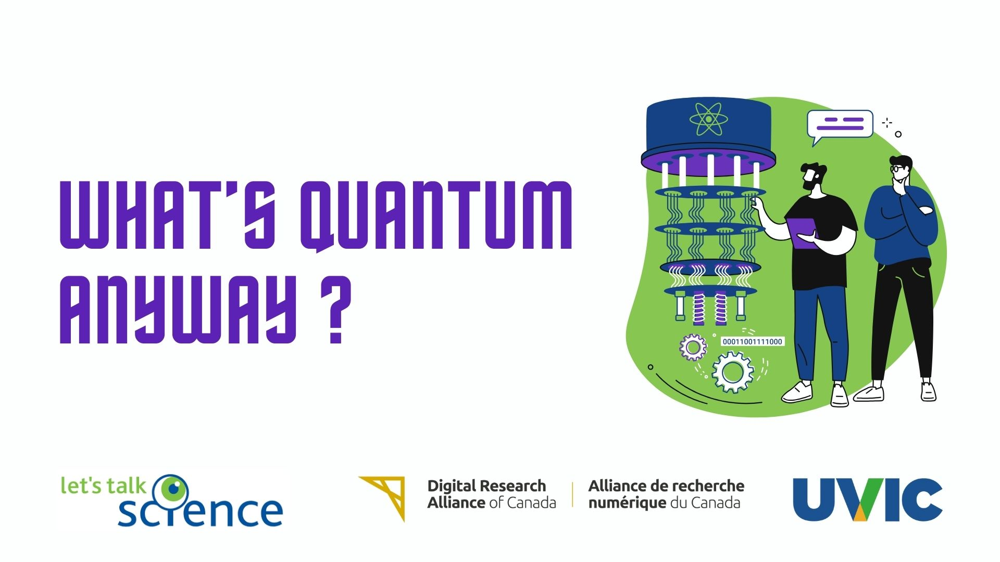
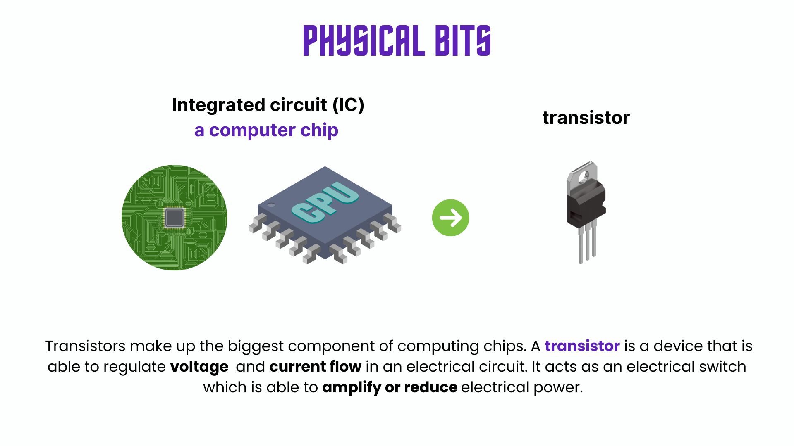
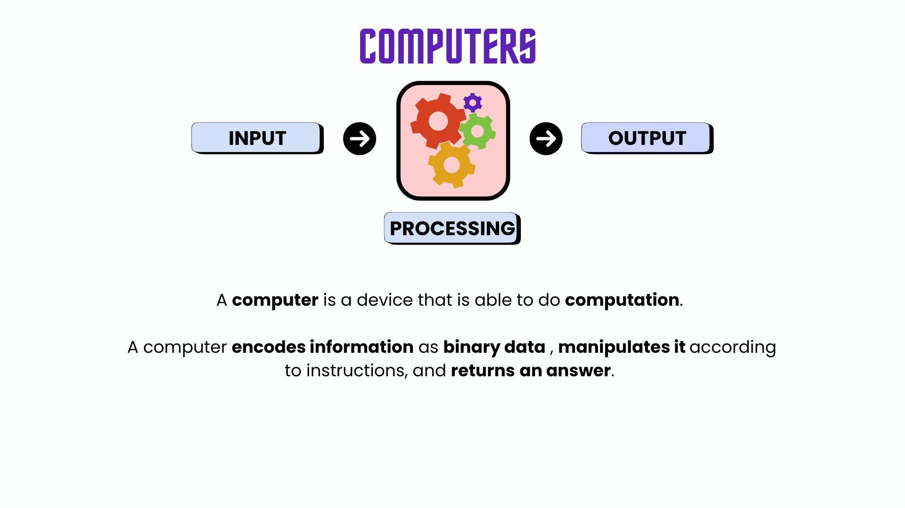

Section Objectives
to understand how computation works in a physical sense
to introduce quantum computation and illustrate quantum properties
Essence of Computation#
Here are some interesting questions that you can ask yourself.
What are bits, physically?
What is a computer?
What isn’t a computer?
Can a molecule be a computer?
Let’s start with the conventional definition of a computer for now.
A computer is an electronic device that processes information (data) to perform specific tasks. It takes input, processes it using instructions (programs), and produces output. Computers are designed to follow precise instructions step by step, making them powerful tools for solving problems, storing data, and automating tasks.
ChatGPT
Data and Information#
From the ChatGPT definition, we notice that the words “information”, “data” as well as “instructions” are emphasized. We also want to go back to the definition of a bit as a “unit of computational information”. Some might say it’s the most basic unit of data.
But what is information and what is data?
When you think about it, information is everywhere, whether from texts that we read, to audio that we listen to, the photos on our phone.
Data is a way to record the state of something.
Information is the interpretation of that data.
Let’s say we have an instrument that measures the intensity of light hitting it. One second, it reads 100, and the other second it reads 150. The data are the assigned numbers, but the information is the interpretation of what those numbers represent.
Physical bits#
So we’ve talked about bits as these abstract units of data and information. But bits are also physical! Digital bits represent the information on the state of some physical object. Here are some examples.
We can read out the voltage of tiny integrated circuits (ICs) or the states of transistors. If the voltage level is beyond a particular threshold, it is
highor in state1,** and if it is below that threshold, it islowor in state0. If a transistor is on, it is in the1state and if it is off, it is in the0state.Hard drive technology uses magnetic material and reads out the magnetic orientation of defined regions of the material (called magnetic domains).
CD technology uses pits and lands on a polycarbonate material to encode information. In the read out, a laser is focussed on the material as there is a difference in how light reflects off of the pits versus the lands. The state
1is read when there is a change from pit-to-land or land-to-pit, and a state0if there is no change.

Computers#
The fact that the knowledge of the state of some physical system represents information that may be used for computation, really puts things into perspective as to what can or can’t be considered a computer.
Technically, a computer is anything that is able to do computation, i.e. receive input, process the input according to some instructions, and give an output.

Outside of our conventional understanding of a computer, here are other examples.
Embedded systems, e.g. cars, medical devices, wearable technology, home appliances (refrigerators, washing machines, thermostats)
Analog computers can use mechanics or hydraulic properties to compute.
The brain because, of course.
DNA computers use strands of DNA with the sequence of nucleotides [adenine (A), thymine (T), cytosine (C), guanine (G)] to compute via biochemical reactions. A and T are state
0and C and G are state1.
So yes, molecules, chemical and biological systems might be used for computing.
There is a key point here though. Whilst they may be able to process input information and give output, they should also be programmable. If we are able to manipulate the states of the chemical or biological systems in a fairly controlled manner, then we can use these for computation.
The key take-aways are:
Input encoding
Output decoding
Information processing
Programmability